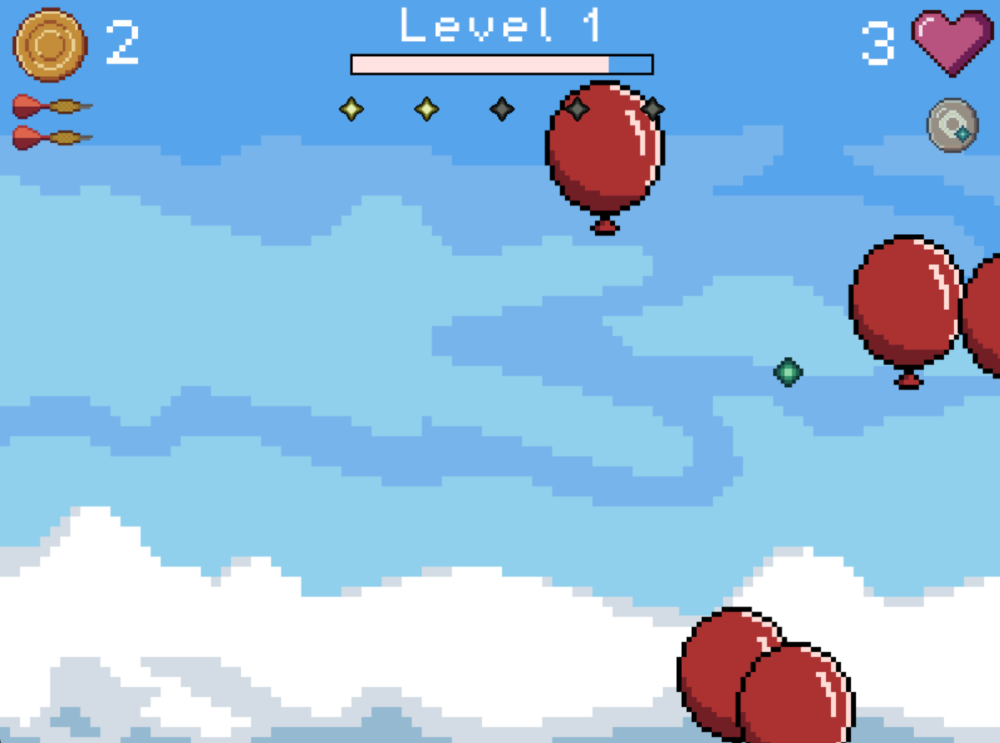

High Flying Rogue

Endlessly pop plastic joy.
This game was made over the course of month last August (2024). I was working a software development intership, but the platform I was working on was incredibly abstracted, with not a lot of opportunity for proper coding. That's what led me to use Love2d for this project. I had experience developing games with engines like Gamemaker, Unity, and Godot, but I wanted to really stretch my coding muscles as much as possible. Lua was a fun language to learn; it's simple, yet elegant in it's design.
In terms of inspiration, I found that almost all the games I'd made in the past were almost always based on some form of violence. "Go here, kill these bad guys, win the game", that sort of thing. Combat was generally at the center of the experience. Thus, with this one I tried to get away from that. Unfortunetly, it seems I wound up making something whose core fantasy still lies in the pleasure of destruction. Not sure what that says about my own psychology, but I'm trying not to read into too much.